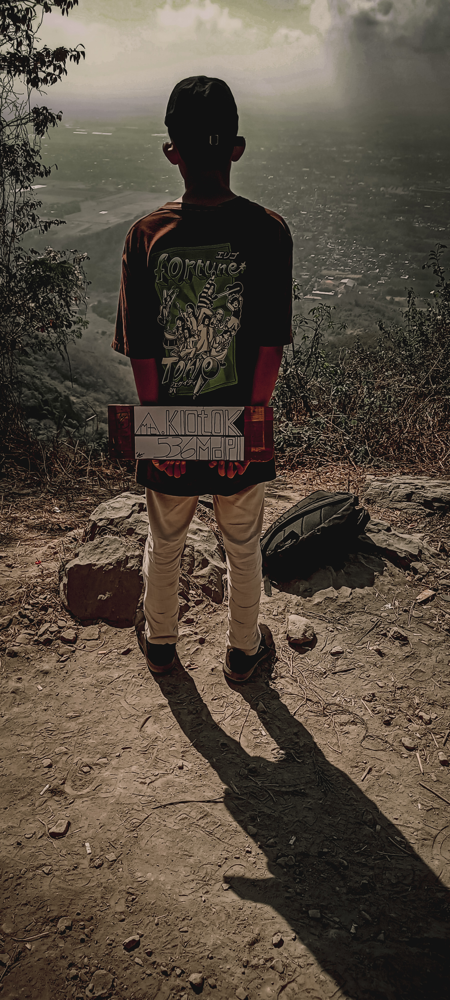
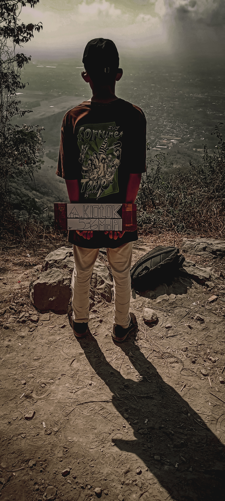

Mendaki Gunung Klotok Kediri
 

ㅤㅤMendaki gunung klotok yang memiliki ketinggian 536mdpl kami mulai dari jam 7. Dan saya tidak
sendirian saya bersama teman saya yaitu Syauqi dari kelas IX-J. Kami memang sudah merencanakan
keguatan ini jauh hari sebelum mendaki.
ㅤㅤPendakian diawali dengan jalan yang menanjak sekitar 40 derajat kemiringan. Dan kami masuk ke
bagian candi klotok. Sebelum ke candi klotok kami disuguhkan pemandangan Kota Kediri dari jalur
pendakian. Lalu kami beristirahat karena capek dengan jalan yang menanjak terus. Kami istirahat
hanya sekitar 3 menit saja. Lalu kami melanjutkan perjalanan hingga Sumber Lho, yaitu sumber mata
air yang berada di Gunung Klotok. Lalu kami melanjutkan perjalanan dengan jalan yang landai
sebentar, lalu menanjak dengan medan berbatu, licin, dan sempit, jadi ketelitian dan kehati-hatian
perlu diterapkan pada saat mendaki.
ㅤㅤSaat mendaki kami berpapasan dengan banyak orang mulai dari anak kecil, remaja seumuran kita, dan
orang tua yang masih semangat untuk mendaki. Dan akhirnya kita disuguhkan jalan yang sangat curam
dengan trek tanah tetapi licin, kemiringan kira kira hampir 70 derajat dan kami harus berjalan
sambil berpegang tali dan bambu. Setelah itu pada sekitar jam 8 hampir 9 kita telah sampai di Puncak
Watu Bengkah yang digunakan untuk pengibaran bendera pada setiap 17 Agustus. Rasanya sangat bangga
melewati jalan yang melelahkan meskipun hanya 536mdpl pemandangan Kota Kediri di atas sangat
terlihat bagus.
Kolom Komentar
Membuat Proyek IoT Untuk Saklar Lampu
ㅤㅤDalam era teknologi yang terus berkembang, Internet of Things (IoT) menawarkan berbagai solusi
untuk membuat perangkat rumah tangga lebih cerdas dan terhubung. Salah satu proyek IoT yang
sederhana namun bermanfaat adalah mengontrol saklar lampu menggunakan modul ESP8266 dan relay 5V.
ESP8266 adalah mikrokontroler berbasis Wi-Fi yang memungkinkan perangkat untuk terhubung ke
internet, sementara relay 5V berfungsi untuk mengendalikan aliran listrik pada saklar lampu.
Kombinasi keduanya memungkinkan pengguna untuk menghidupkan atau mematikan lampu dari jarak jauh
melalui jaringan Wi-Fi.
ㅤㅤUntuk memulai proyek ini, pertama-tama, Anda perlu menyiapkan ESP8266 dan relay 5V. ESP8266 akan
bertindak sebagai otak dari proyek ini, yang akan diprogram menggunakan Arduino IDE untuk
menghubungkan ke jaringan Wi-Fi dan menerima perintah. Relay 5V, yang berfungsi sebagai saklar
elektronik, akan dipasang untuk mengendalikan aliran listrik ke lampu. Pastikan untuk menyambungkan
kabel dengan benar: ESP8266 ke relay dan relay ke sumber listrik lampu. Konfigurasi ini memungkinkan
ESP8266 untuk mengendalikan relay, yang pada gilirannya menghidupkan atau mematikan lampu.
ㅤㅤSetelah perangkat keras terpasang, langkah berikutnya adalah memprogram ESP8266 untuk
menghubungkan ke Wi-Fi dan menerima perintah melalui aplikasi web atau aplikasi kontrol IoT lainnya.
Dengan mengembangkan antarmuka pengguna yang sederhana, Anda dapat mengendalikan lampu dari
perangkat apa pun yang terhubung ke internet. Proyek ini tidak hanya memberikan pengalaman belajar
yang berharga dalam dunia IoT tetapi juga meningkatkan kenyamanan dan efisiensi rumah Anda. Dengan
kemampuan ini, Anda dapat mematikan lampu secara otomatis saat tidak diperlukan atau menghidupkannya
sebelum Anda pulang ke rumah, meningkatkan pengalaman sehari-hari dengan teknologi yang cerdas.